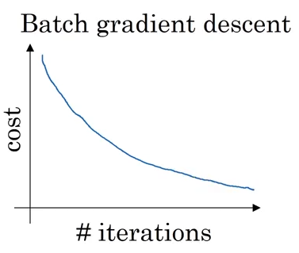

Mini Batch Gradient Descent
Because of the way that we vectorize our implementations of forward and back propagation, the calculations on each step are done in a single matrix multiplication operation. This is great for performance’s sake, but at scale, it represents an issue. Because most deep-learning applications tend to amass huge datasets to get piped into them, it becomes increasingly difficult to perform all of these in-memory computations when you can’t, well, hold everything in memory.
Mini Batch: A Solution
If we refer to the “do it all at once” training as Batch Gradient Descent, then Mini Batch Gradient Descent involves splitting our original dataset up into a handful of smaller datasets, then running each of them through the algorithms we’ve been using. In pseudocode:
for batch in batch_dataset(X, y):
forward_prop()
cost_fn()
back_prop()
update_weights()It’s important to note that the batch_dataset() has two steps:
- Shuffling the dataset, maintaining matching
X, ypairs - Partitioning the shuffled data into several, smaller batches
Cost Function Over Time
With batch gradient descent, our cost function monotonically decreased over time as we continually iterated over the dataset.
from IPython.display import Image
Image('images/batch_descent.png')
Alternatively, because we’re taking random samples of data, some samples may yield more error than others within the same iteration, so we get this local oscillation / global decrease behavior that makes for less-neat performance investigation.
from IPython.display import Image
Image('images/mini_batch_descent.png')
Determining Batch Size
So how many batches should we break our data up into? Consider a dataset with m training examples.
At two extremes we can have:
m batches.
- This undoes all of the performance gains that we got with vectorization
- This undoes all of the performance gains that we got with vectorization
1 batch
- This is just batch gradient descent, which, again, we can’t fit into memory
And for Computational Reasons™, our batches should always be a power of 2. Typically in 64, 128, 256, 512. Be careful to ensure that your batch fits into memory!
When to Even Bother?
If you have a small training set (m < 2000), just use batch gradient descent.